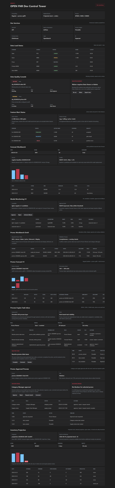

OPEN FNR Sprint 11: Replenishment Foundation
Аннотация: тестируем основу пополнения запасов: загрузку current stock, open orders, in-transit, lead time, demand projection и расчет projected stock по дням с предупреждением stock-out.
Что тестируем
| Область | Что делаем | Зачем | Факт |
|---|---|---|---|
| Inventory projection API | Открываем /replenishment/inventory-projections/projection-20260528-s001-sku001. |
Проверяем слои расчета: stock, demand, open orders, in-transit. | Слои возвращаются. |
| Projected stock formula | Считаем opening + receipts - demand. | Это базовая формула demand projection для последующих order proposals. | Формула проверена. |
| Stock-out warning | Классифицируем projected stock против safety threshold. | Planner должен видеть риск до формирования заказа. | Stock-out на 2026-06-01 найден. |
| Data contract | Проверяем available stock = on-hand - reserved. | Ошибочные остатки ломают расчет пополнения. | Контракт валидируется. |
UI-тестирование
- Открываем Dev Control Tower и находим блок
Inventory Projection. - Проверяем карточку projection id, store, SKU, forecast version и lead time.
- Проверяем stock-out warning для 2026-06-01.
- Проверяем фильтры Store, SKU, Horizon, Safety.
- Проверяем график projected stock и визуальное выделение последнего дня.
- Проверяем таблицу слоев: opening, demand, open orders, in-transit, projected, risk.

Бизнес-процесс по шагам
| Шаг | Действие | Почему | Результат |
|---|---|---|---|
| 1 | BPMN запускает replenishment_calculation_process. |
Расчет должен быть управляемым процессом, а не скрытым batch. | Process artifact создан. |
| 2 | Загружается stock snapshot. | На нем фиксируется стартовая позиция склада/магазина. | Snapshot id доступен в projection. |
| 3 | Загружаются open orders и in-transit. | Будущие приходы меняют projected stock. | 80 units open order и 60 units in-transit видны в API/UI. |
| 4 | Загружается demand projection. | Это спрос, который будет списывать запас. | Demand layer рассчитан по дням. |
| 5 | Считается projected stock. | Это основа order proposal в следующем спринте. | Projected stock по дням доступен. |
| 6 | DMN оценивает качество и риск. | Stock-out или missing receipts должны открывать исключение. | DMN и CMMN artifacts созданы. |
Автоматические проверки
| Команда | Результат |
|---|---|
python -m pytest |
87 passed |
npm.cmd run build |
Frontend build completed |